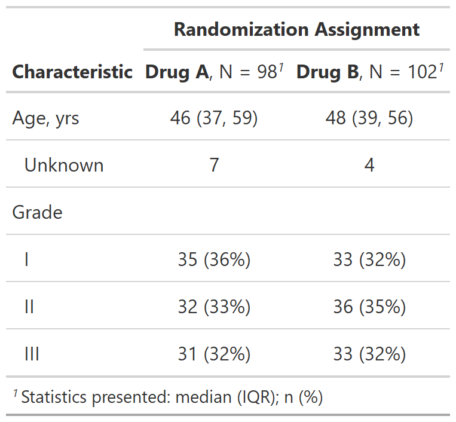

| modify_spanning_header {gtsummary} | R Documentation |
Update gtsummary table spanning header
modify_spanning_header(x, update)
x |
a gtsummary object |
update |
list of formulas or a single formula specifying the update.
The LHS selects the variables
whose spanning header will be updated, and the RHS is the new spanning header.
For example, |
gtsummary object
Example 1

Other tbl_summary tools:
add_n(),
add_overall(),
add_p.tbl_summary(),
add_q(),
add_stat_label(),
bold_italicize_labels_levels,
inline_text.tbl_summary(),
inline_text.tbl_survfit(),
modify_footnote(),
modify_header(),
tbl_merge(),
tbl_stack(),
tbl_summary()
Other tbl_regression tools:
add_global_p.tbl_regression(),
add_nevent.tbl_regression(),
add_q(),
bold_italicize_labels_levels,
combine_terms(),
inline_text.tbl_regression(),
modify_footnote(),
modify_header(),
tbl_merge(),
tbl_regression(),
tbl_stack()
Other tbl_uvregression tools:
add_global_p.tbl_uvregression(),
add_nevent.tbl_uvregression(),
add_q(),
bold_italicize_labels_levels,
inline_text.tbl_uvregression(),
modify_footnote(),
modify_header(),
tbl_merge(),
tbl_stack(),
tbl_uvregression()
# Example 1 ----------------------------------
# add header above summary statistics
spanning_header_ex1 <-
trial %>%
select(trt, age, grade) %>%
tbl_summary(by = trt) %>%
modify_spanning_header(starts_with("stat_") ~ "**Randomization Assignment**")